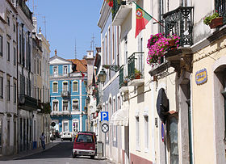

Santarém é uma cidade portuguesa, capital do Distrito de Santarém, com 29 929 habitantes no seu perímetro urbano (2012). É sede de um município com 552,54 km² de área e 61 752 habitantes (2011), subdividido em 18 freguesias. O município é limitado a norte pelos municípios de Porto de Mós, Alcanena e Torres Novas, a leste pela Golegã e pela Chamusca, a sueste por Alpiarça e Almeirim, a sul pelo Cartaxo, a sudoeste pela Azambuja e a oeste por Rio Maior.
Santarém integra a região estatística (NUTS II) do Alentejo e na sub-região estatística (NUTS III) da Lezíria do Tejo; continua, no entanto, a fazer parte da Comissão de Coordenação e Desenvolvimento Regional de Lisboa e Vale do Tejo, que manteve a designação da antiga NUTS II com o mesmo nome. Pertencia ainda à antiga província do Ribatejo (da qual era a capital e centro urbano mais importante), hoje porém sem qualquer significado político-administrativo, mas constante nos discursos de auto e hetero-identificação. Os habitantes de Santarém chamam-se "Escalabitanos" ou "Santarenos".
